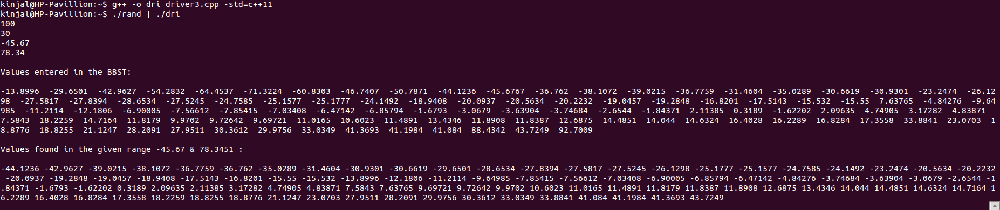
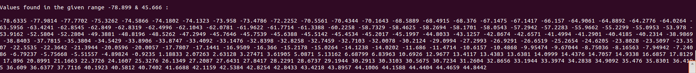
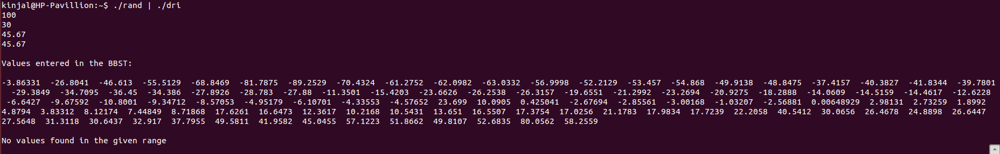
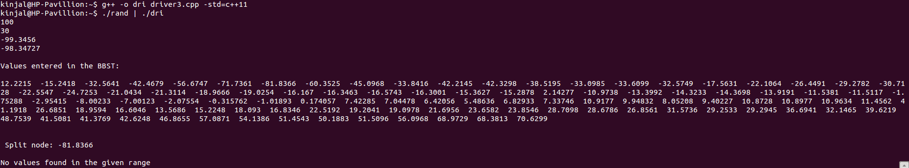
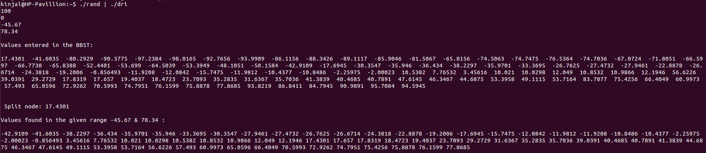
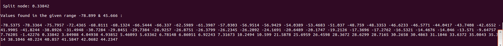
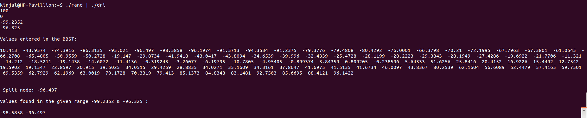

In this assignment we implemented 1 D Range Query using Balanced Binary Search Tree ( Red Black Tree) as a header file bbst.h. It includes two classes, namely:
Here we take a look at a breakdown of our code and explain our approach.
Driver program takes input as random numbers from a Generator.cpp file which generates numbers( acepts float values also) in some range according to some distribution specified in it. We also take various parameters like n (number of values), LowerRange and UpperRangeValue of the query at STDIN: Number of points, n. xLower and xUpper values for the query. The points are stored in a BBST.
algorithm.h contains the implementation of the aforementioned 2 classes, namely: BBST and BBSTNode. The corresponding methods can be invoke by calling:
void insert(float data)
BBSTNode* findSplitNode(float v1, float v2)
bool search(float v)
void preorder()
void followLower( float v1, BBSTNode* k, vector< float >& v)
void followUpper( float v2, BBSTNode* k, vector< float >& v)
 In this case, the test case is not too large and includes floating point dataset which follows normal distribution. It gives accurate results quickly.
 In this case, the test case is large and includes floating point dataset which again follows normal distribution. It gives accurate results but in time greater than the first case.
 In this case, the test case is small and follows normal distribution but the xUpper = xLower value and thus the query is reduced to a search in BBST. The above screenshot gives a negative result as the numbers generated don't include the xLower value.
 In this case, the test case is small and follows normal distribution but the xUpper - xLower value is very small. The above screenshot gives a negative result as the numbers generated don't include any value between the specified range.
 In this case, the test case is small and follows uniform distribution with a large xUpper - xLower value. It gives accurate results quickly.
 In this case, the test case is very large and follows normal distribution but the xUpper - xLower value is very small. It gives accurate results but in time greater than the previous case because of the logn factor.
 In this case, the test case is small and follows normal distribution but the xUpper - xLower value is very small. The above screenshot gives a positive result as the numbers generated include some values between the specified range.